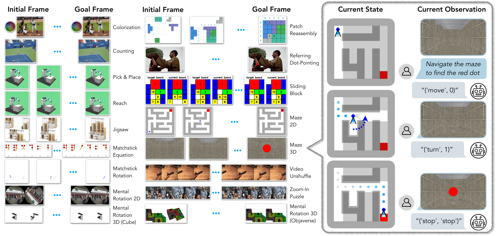
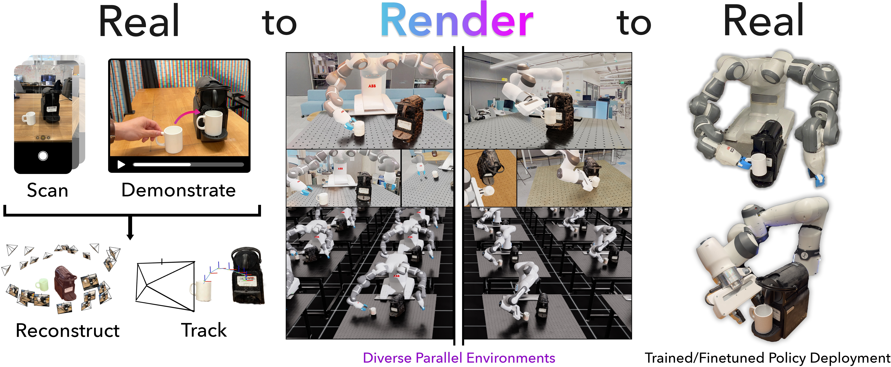
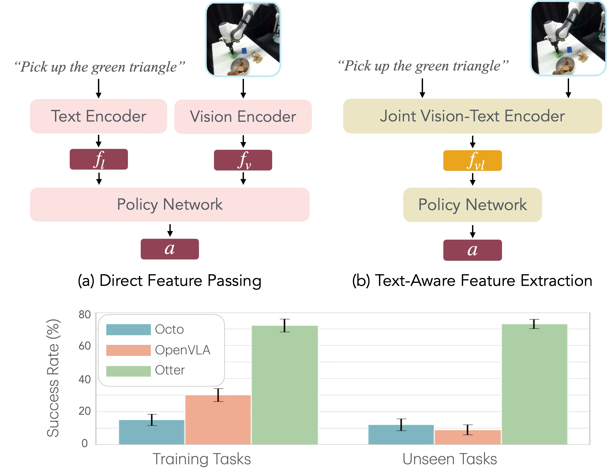
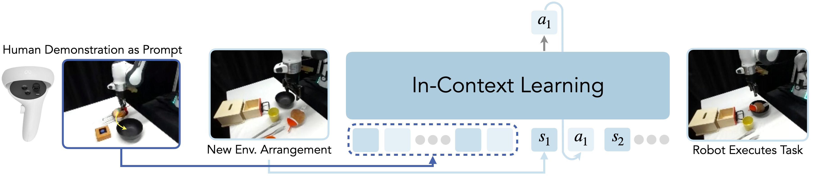
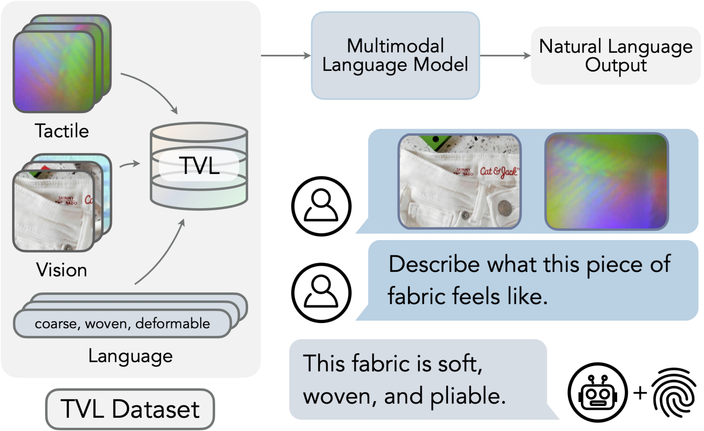
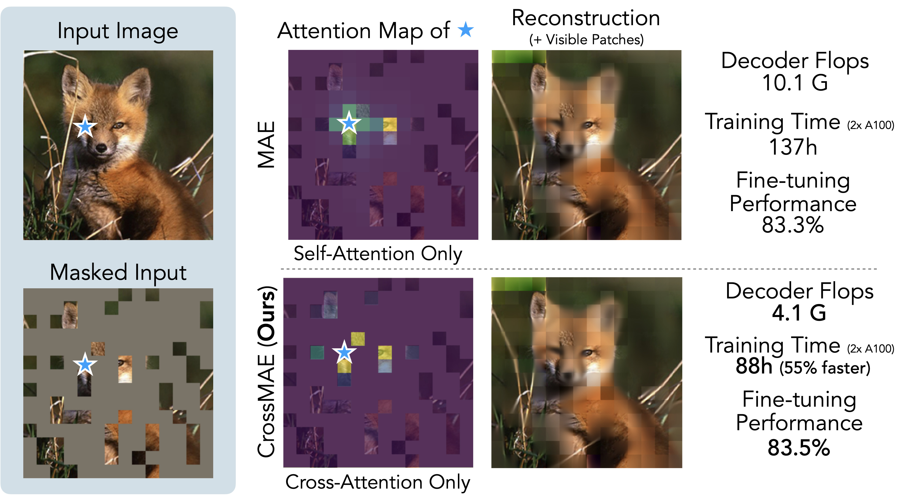
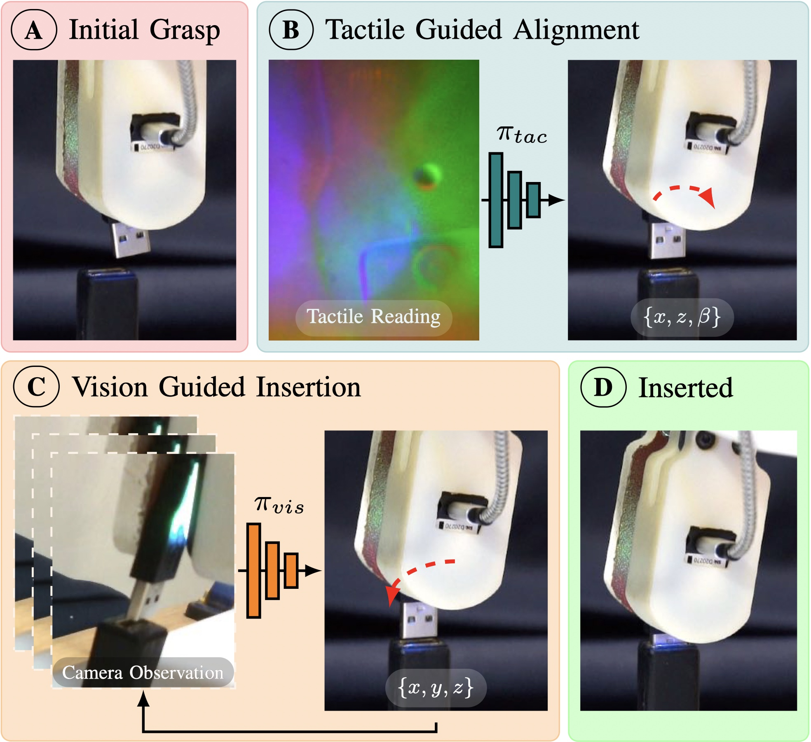
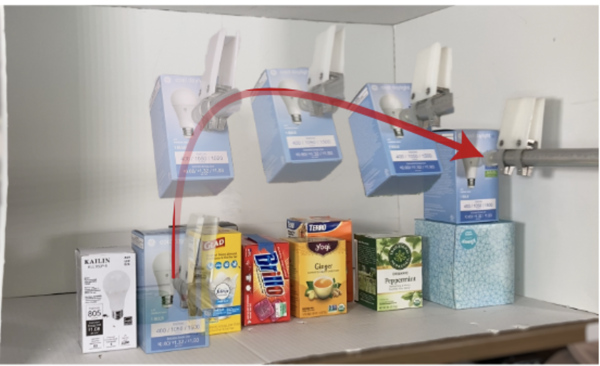
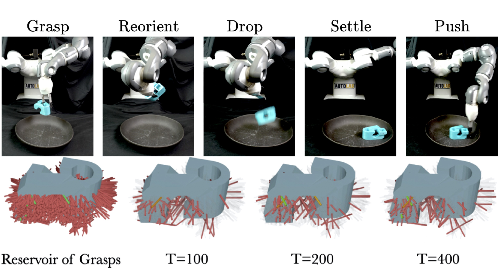
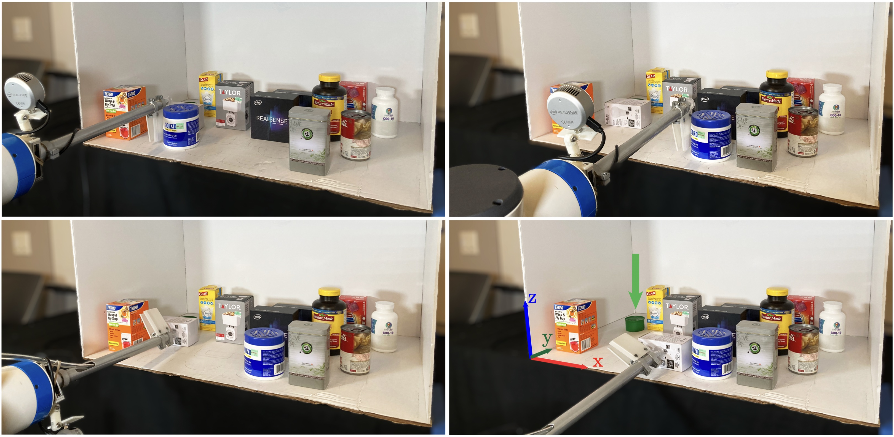

|
I am a research scientist at Google DeepMind Robotics. I received my PhD from UC Berkeley advised by Professor Ken Goldberg. Previously, I was a research intern at NVIDIA, working with Jim Fan and Yuke Zhu. I work on agents and foundation models for robot learning. See dissertation here. Email / Google Scholar / Twitter / Resume |
|










|
Website is in part based on Jon Barron's site. |